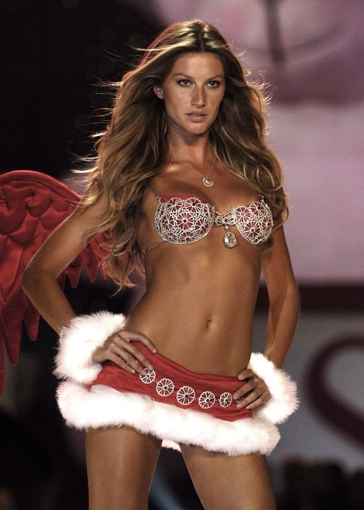
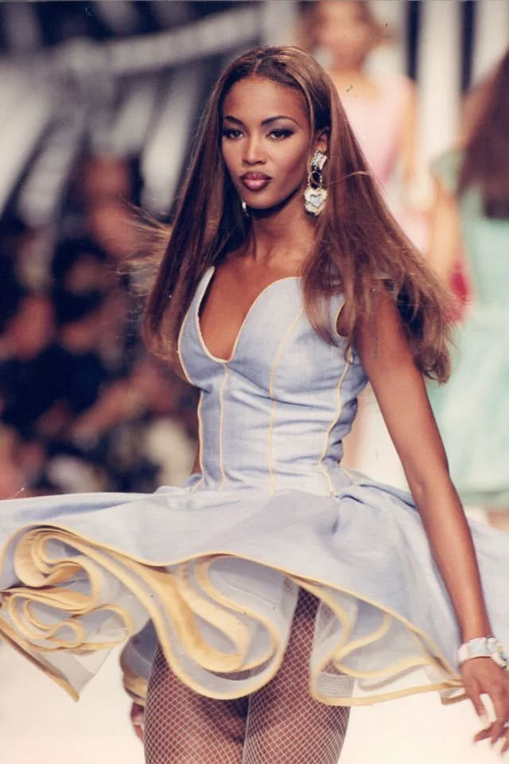
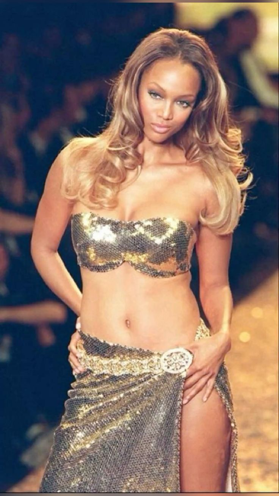
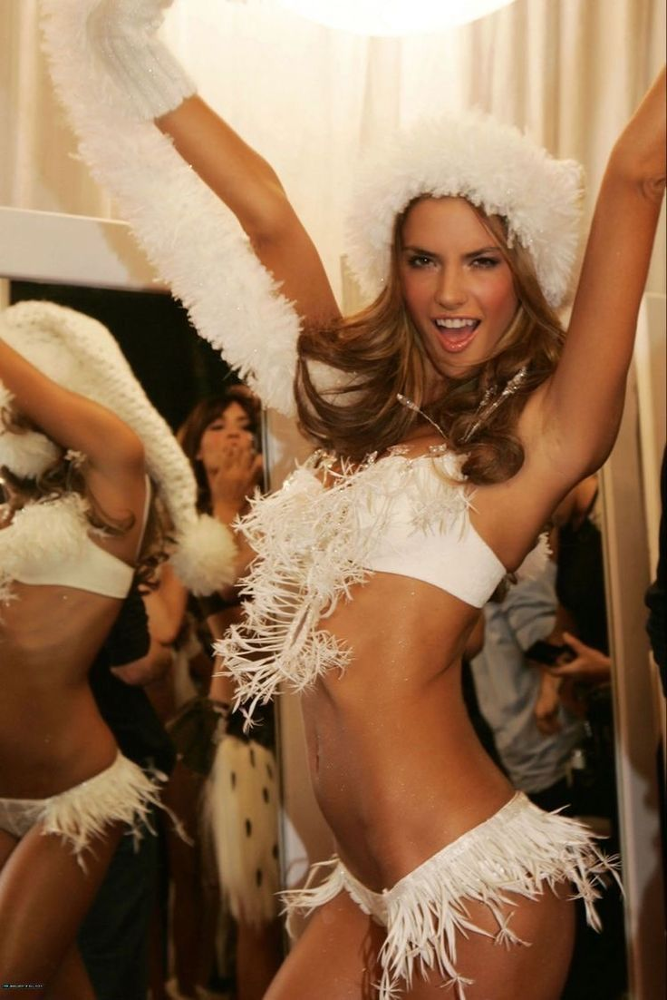
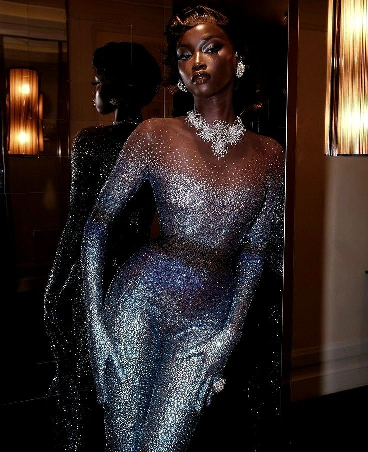
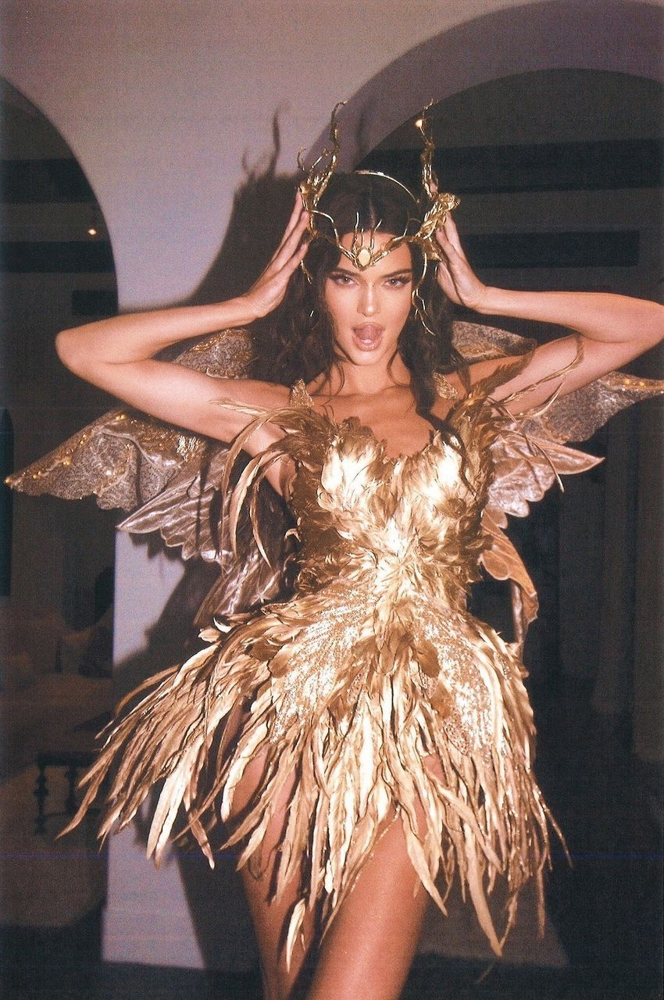

modelos que marcaram gerações
Fotos em destaque

Ícone das passarelas
Gisele Bündchen se tornou uma das modelos brasileiras mais conhecidas internacionalmente e marcou a moda nos anos 2000.

Lenda da moda
Naomi Campbell é uma das modelos mais reconhecidas da história e construiu uma carreira marcante nas passarelas e revistas.
Beleza brasileira
Adriana Lima ganhou destaque internacional e se tornou uma das modelos mais conhecidas dos anos 2000.

Modelo e personalidade
Tyra Banks alcançou grande sucesso como modelo e também construiu uma carreira na televisão e no entretenimento.

Elegância brasileira
Alessandra Ambrosio ganhou reconhecimento internacional e se tornou uma das principais modelos brasileiras de sua geração.

Beleza e estilo
Anakioki é uma modelo que ganhou destaque nas redes sociais por seu estilo, beleza e presença marcante. Ela representa uma nova geração de modelos

Sucesso na atualidade
Kendall Jenner ganhou destaque nas passarelas e campanhas de grandes marcas, tornando-se uma das modelos mais conhecidas da atualidade.